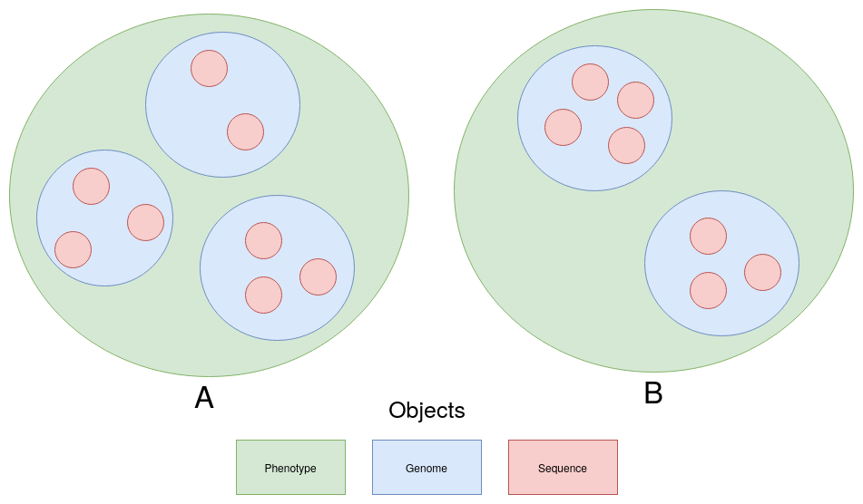

Modules¶
Object Structure¶
- Phenotype Objects
The outermost layer of representation. Instances of Phenotypes have a key which represents their biological phenotype and hold a list of Genome objects that are classified has having the phenotype of the Phenotype instance they exist within. Phenotype objects are where phenotype to phenotype comparisons take place. Cross Phenotype comparison methods will take in a one phenotpye instance as an arguement and compare it to the phenotype instance the function was called on.
For example if Phenotype class had a method called find_conserved_seqs then using the object structure image above it could be used like
A.find_conserved_seqs(B)
And in theory this would return the same result as
B.find_conserved_seqs(A)
- Genome Objects
Genome objects represent an individual bacterial genome sequence. The actual sequences are supplied in fasta formated file. Instances have functions that do things relating to an individual genome, such as predict coding regions and extract non-coding regions.
- Sequence Objects
Currently the innermost form of representation. Sequence objects represent a specific nucleotide sequence of interest within a Genome. They contain methods that would be applied on a specific sequence of a specific genome. This includes things like translating to all six reading frames.